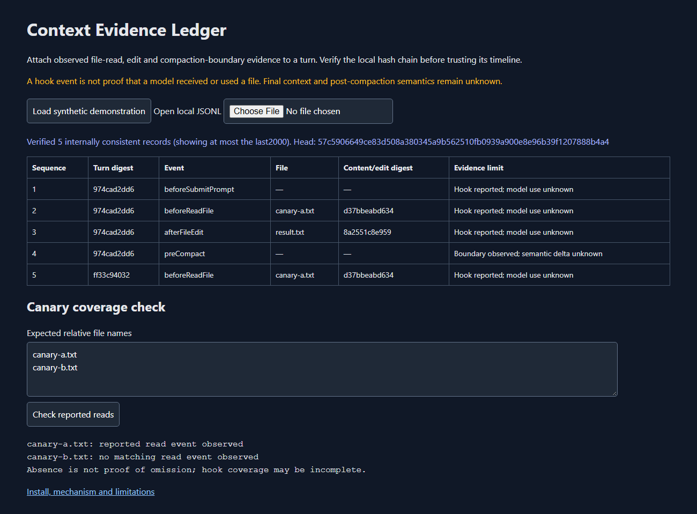

Inspect reported file-read and edit events around compaction boundaries. Verify the recorded chain before showing its per-turn timeline.
Open the live application · Desktop and recorder downloads · Source and complete guide
Reported events do not prove final context admission, causal attribution or model-internal use.

Copy the two recorder scripts into your target project's .cursor/context-ledger directory. Merge the supplied hook configuration into .cursor/hooks.json while preserving existing hooks. The Node recorder writes only its local .context-ledger/events.jsonl. Keep that private log out of version control.
Load the synthetic demonstration, or open your own JSONL with the local file picker. The browser checks every sequence and digest before displaying rows. Enter expected relative canary filenames to compare reported reads. No matching event does not establish that a file was omitted from the final context.
Content and prompts are hashed rather than stored verbatim. Filenames, timings and hashes still reveal metadata. A before-read hook does not establish read completion. Compaction metrics identify a boundary, not the semantic content of the new summary. An external retained head is needed to detect a whole-chain rewrite or tail truncation.
The Windows package includes Electron45.2.1. Its browser renderer has no Node access or privileged IPC; static resources are served only over loopback. Profile files are placed next to the executable. The packaged self-test checks renderer loading and isolation, not live Cursor integration.
Original code uses supported Cursor hooks; no proprietary client was decompiled or redistributed. The source includes core, actual recorder-process, concurrent-writer and browser tests, synthetic fixtures, build scripts and host licenses.
node --test tests/ledger.test.cjs node scripts/demo.cjs